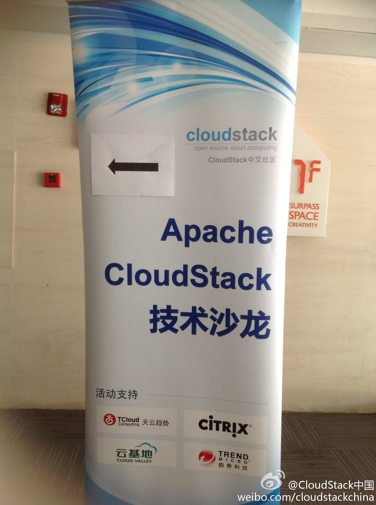
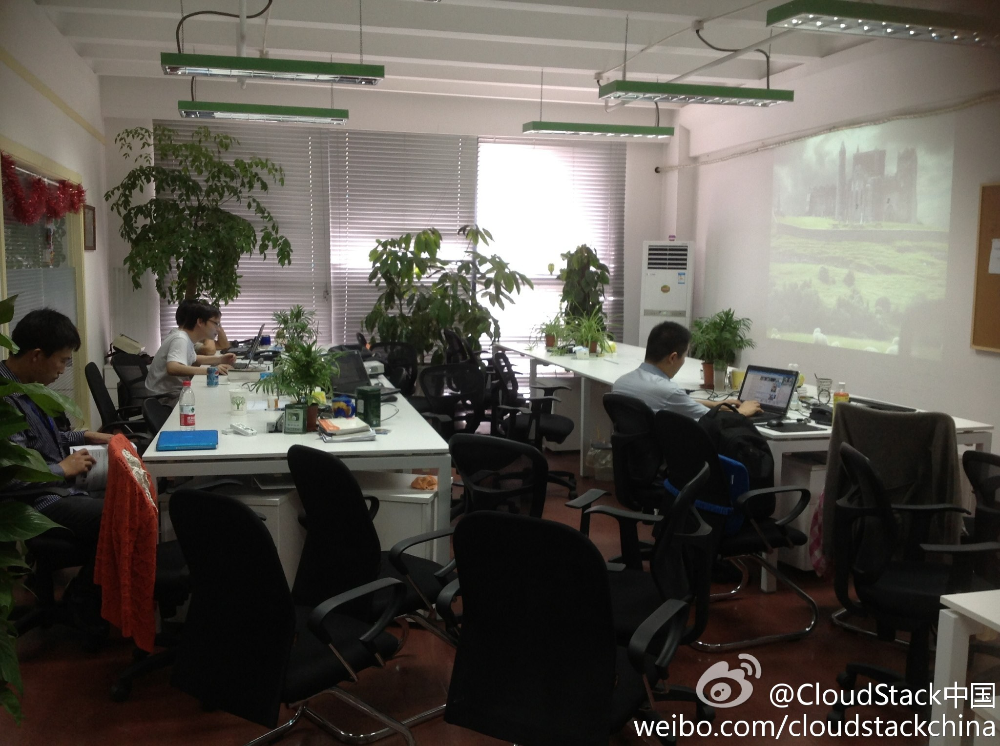

@CloudStack中国:#CloudStack技术沙龙#第18期全部准备就绪！已经有同学到了哦！期待吧！今年上海的最后一场！@lee-xh @Ada李力 @Mice蔚然成风 @Tanthalas 我在:#越界创意园区# 感谢圣荷赛对本期活动场地的大力支持！ 

 全部准备就绪！已经有同学到了哦！期待吧！今年上海的最后一场！@lee-xh @Ada李力 @Mice蔚然成风 @Tanthalas 我在:#越界创意园区# 感谢圣荷赛对本期活动场地的大力支持！
全部准备就绪！已经有同学到了哦！期待吧！今年上海的最后一场！@lee-xh @Ada李力 @Mice蔚然成风 @Tanthalas 我在:#越界创意园区# 感谢圣荷赛对本期活动场地的大力支持！